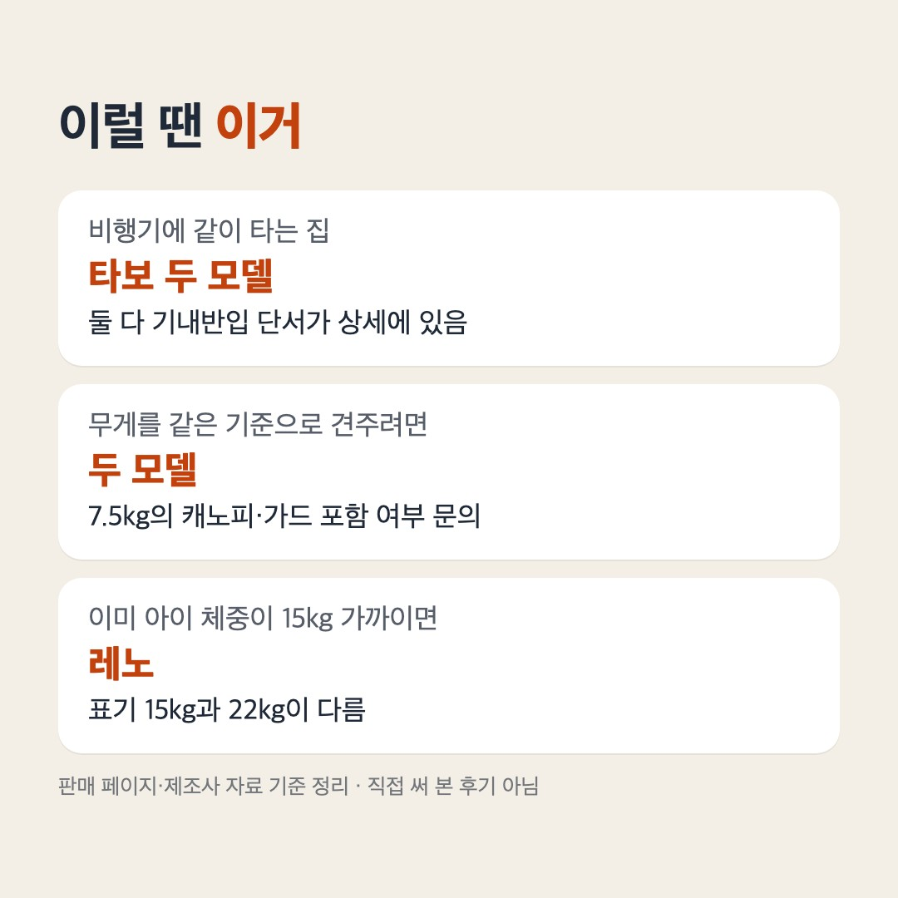
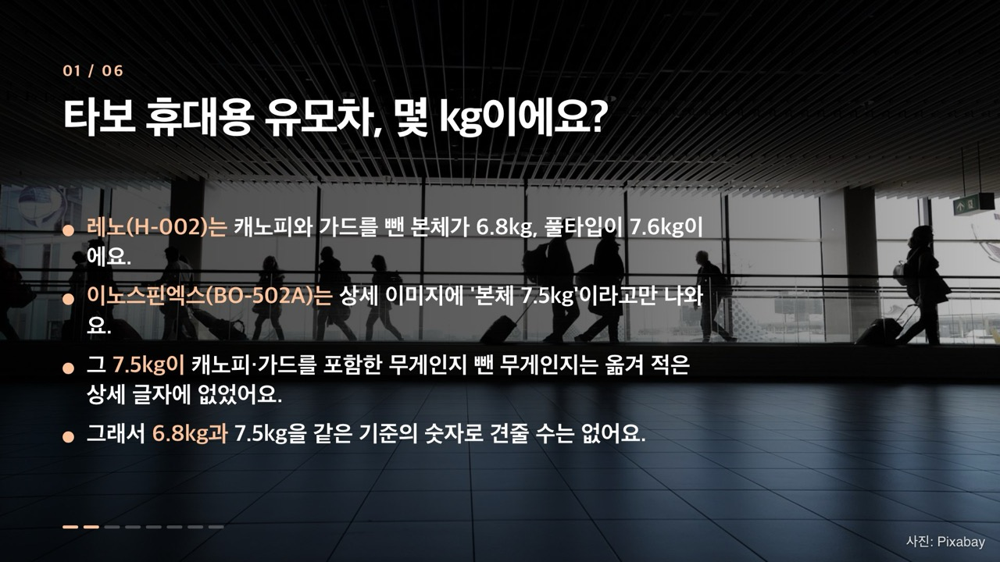

이 게시물은 쿠팡 파트너스 활동의 일환으로, 이에 따른 일정액의 수수료를 제공받습니다.
타보 휴대용 유모차 무게, 레노 6.8kg은 캐노피·가드를 뺀 숫자
비행기 탈 때 실제로 들게 되는 레노의 무게는 7.6kg에 가깝습니다. 흔히 보이는 6.8kg은 캐노피와 가드를 뺀 본체 무게이고, 다 단 풀옵션은 7.6kg이라고 제조사가 적었거든요. 이노스핀엑스의 7.5kg은 어떤 기준인지 적혀 있지 않아서, '레노가 0.7kg 가볍다'는 비교는 성립하지 않아요.
두 모델, 같은 기준으로 놓으면
| 모델 | 적힌 무게 | 기준 |
|---|---|---|
| 누비앤타보 레노(H-002) | 6.8kg / 7.6kg | 캐노피·가드 제외 / 풀옵션 |
| 타보 이노스핀엑스(BO-502A) | 7.5kg | 표기 없음 |
레노는 캐노피·가드 몫이 0.8kg이에요(7.6−6.8). 탑승구 앞에서 캐노피를 떼어 가방에 넣을 생각이 아니라면, 손에 드는 무게는 7.6kg으로 잡는 게 맞습니다. 이노스핀엑스를 같은 조건으로 견주려면 7.5kg이 캐노피·가드를 단 무게인지 판매자에게 물어야 해요.

기내반입이라는데, 그냥 들고 타면 되나요?
둘 다 판매 페이지에 '기내반입 가능'이 적혀 있지만, 상세 이미지에는 단서가 붙어 있어요.
- 레노: 기내반입은 가능하지만 도어 투 도어 서비스를 권장한다고 적었어요. 탑승 직전까지 유모차를 쓰다가 맡기고, 도착 후 탑승구에서 바로 찾는 방식이에요.
- 이노스핀엑스: 항공기 사정과 승무원 재량에 따라 기내반입이 안 될 수 있으니, 그럴 땐 게이트 투 게이트 서비스를 쓰라고 안내해요.
그러니 '들고 탄다'보다 '탑승구까지 밀고 가서 맡긴다'를 기본으로 두면 계획이 틀어질 일이 적어요. 들고 탈 생각이면 레노의 접은 크기(세운 높이 590mm, 바닥 300mm·최대폭 540mm)를 탈 항공사의 기내 수하물 규정에 대 보세요. 이노스핀엑스는 접은 크기 도식에 57·46cm와 72·32cm가 함께 있는데 어느 쪽 길이인지 표기가 없어요.

아이가 몇 kg이면 어느 모델까지?
- 레노: 공식몰 상품정보표에 '신생아~15kg 이하(국내 안전검사 기준)'와 '신생아~22kg 이하(유럽 안전인증 기준)'가 함께 있어요. 국내 기준으로는 15kg까지로 보면 됩니다. 아이가 이미 13~14kg이라면 레노를 쓸 수 있는 기간이 짧다는 뜻이죠.
- 이노스핀엑스: 판매 페이지 속성란에 최대 22kg. 상세 이미지에는 연령·최대 체중 숫자가 없어요. 또 판매 페이지의 KC 번호가 11월 12일 제품안전정보센터 조회에서 '기간만료'로 나와, 고른다면 받을 제품 라벨의 KC 번호를 판매자에게 먼저 받아 두세요(레노 번호는 같은 조회에서 '적합').
정리하면 이래요.
- 가벼운 숫자가 확실히 필요한 집 → 레노. 기준이 밝혀진 숫자(6.8kg/7.6kg)가 있는 쪽은 레노뿐이에요.
- 아이 체중이 15kg에 가깝거나 넘는 집 → 레노는 국내 기준 범위를 넘으니 맞지 않아요.
공식몰 레노 주의사항에는 연속 사용 1시간 이내, 정원 초과 탑승 금지, 아이 혼자 두지 않기, 안전벨트 착용, 핸들에 무거운 짐 걸지 않기가 적혀 있어요.
확인하지 못한 것: 이노스핀엑스 7.5kg의 기준, 두 모델의 단계별 접는 순서. 직접 들어 보거나 접어 본 글은 아니에요.
접는 순서와 커버 씌운 날의 접는 법은 이 글에 따로 정리했어요.
https://blog.naver.com/darri06/224468030256
출처
- 누비앤타보 공식몰 레노 상세(제조사 (주)휠러, 11월 11일 확인): https://nuvytavo.com/product/detail.html?product_no=48
- 무게·크기·기내반입 문구: 11월 6일 쿠팡 판매 페이지와 상세 이미지 글자